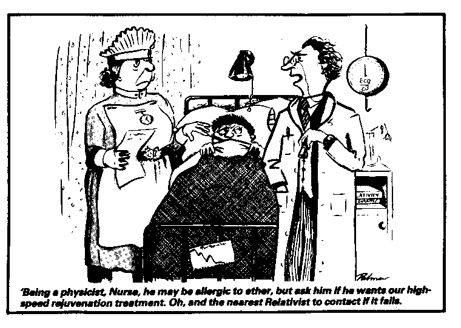
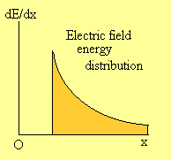
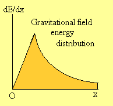
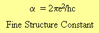
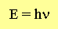
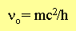
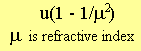
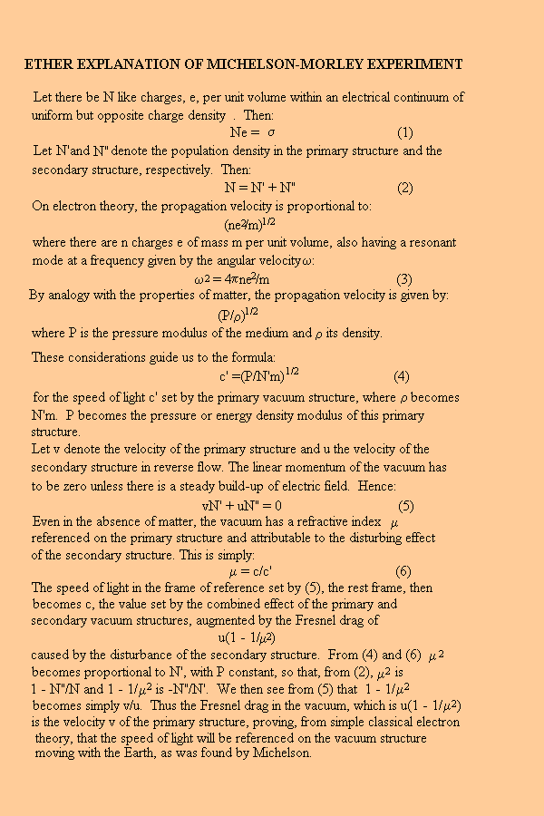
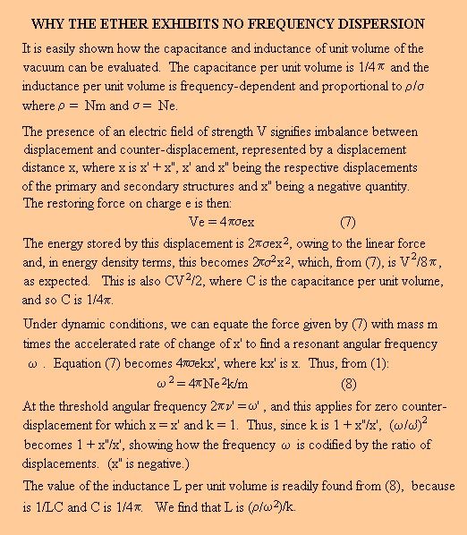

LECTURE NO. 24
THE ETHER - AN ASSESSMENT
Copyright © Harold Aspden, 1998
INTRODUCTION
The above is the title of an article of mine which appeared in the October 1982 issue of Wireless World. I wrote it because I had noticed that the Editor of that popular periodical was not averse to the idea that radio waves might well be waves propagated through the ether. He was not intent on suppressing opinions that put the ether on the winning side of the ever-ongoing debate concerning the relative merits of ether theory versus Einstein's theory.
Unlike so many editors of physics periodicals, who see it as a duty to censor all that they publish to ensure at all times an absolute adherence to the Einstein doctrine, here was an Editor who saw that those who read Wireless World enjoyed witnessing and indeed participating in the contest, the object of which was to glean the truth concerning the medium in which radio waves propagate.
After all, Einstein's theory is of no practical use in technology, but the technology of radio communication and the energy transfer processes which are involved in high frequency wave transmission has been developed by those who saw Maxwell's theory as a foundation on which to build.
Here, the operative word is 'build', not 'destroy', and it is no comfort to be told that Einstein developed his mathematical, but abstract, picture of 'space-time', in just such a way as to leave Maxwell's equations intact, notwithstanding the distortions introduced by 'four-space' transformations.
How can it be that those involved in the early days of radio technology, just as they were getting the measure of what was involved in radio propagation, were suddenly expected to deny their belief in the existence of the ether and adjust to a new philosophy? This was a philosophy which said: "If you cannot understand why something you think should happen but yet does not happen, then think about it in a different way and pretend it does happen! Transform your viewpoint and look at the problem from a different angle, one where you are the governing authority from which all physical action takes its reference, so that you will always see things in the same light and with reference to that something wiser beings once called the 'ether'."
Well, thankfully, the Editor of Wireless World, saw the 'world' as one in which one can communicate by acting collectively by allowing the electromagnetic waves which they generate to be pooled in the common sea of energy that constitutes the real 'ether' medium. Given that as one's foundation then one can take Maxwell's equations and think about building on the common foundation that supports those equations, rather than destroying the foundation and then saying that Maxwell's ghost is still there asserting influence - subject, of course, to that ghost not doing anything contrary to Einstein doctrine.
So it was that I came to pay attention to three articles which appeared in Wireless World and I saw my chance to offer the Editor my paper of the above title: The Ether - An Assessment. Now let me say at the outset that I wrote the paper, not intending to play an old classical tune, but rather to show where opportunities had been missed when it came to interpreting the observed facts which feature in this scenario.
I could see how there was error in deriving the Larmor formula for energy radiated by the accelerated electron. I could see that there was error in deriving what is known as the 'Poynting Vector'. I could see that there was error in explaining how electric currents set up actions which inject energy into the vacuum as a so-called magnetic field, energy which is 100% recoverable, but yet letting the explanation ride exclusively on empirical formulations without giving any physical causal basis justifying why those equations work. I could see there was error in assuming that the ether could not sustain distortionless signal propagation, an assumption relied upon at their peril by cosmologists who interpret Hubble distances on such false assumptions. In this latter context I could but assume that they had not heeded Heaviside's success in inventing the distortionless transmission line and so had not seen that Heaviside was merely replicating something Nature had provided as a feature of the ether. I could, further, see where Lorentz had erred in interpreting the Michelson-Morley experiment incorrectly and with it the Trouton-Noble experiment, an experiment of far greater importance, thereby opening the door for Einstein. I could see that those of us interested in electromagnetic waves, as real ether waves, and in learning also about the properties of stationary waves, as set up by reflections, had been left in the dark by physicists who did not trouble to apply standing wave theory to their opinions concerning the Michelson-Morley experiment. I could see that here Michelson and Morley could be forgiven for not taking such standing wave effects into account in setting the theory for their experiment. The reason was that Wiener, the scientist who first discovered the effect set up by standing waves, namely the phase-lock connection with mirror surfaces, did not make that discovery until some years after Michelson-Morley completed their experiments. However, how can we excuse those who let these facts pass them by as if they were irrelevant when set alongside the Einstein notion that light speed takes its reference, not from a mirror to which its standing wave energy is locked, but from an observer sitting outside the test apparatus and just looking at the light patterns of interfering waves?
That, in summary, was why I decided to write the article of the above title. I will now work through that article step by step and will amplify the points made, by introducing links to other pages on this Web site, so as to leave the reader in no doubt that the case against the Einstein doctrine is formidable indeed. Conversely, the case in favour of a belief in the ether is overwhelming in view of the enormous vista of new physics and, hopefully, new technology, that one can then see.
THE DYING PATIENT
I hold firmly to the opinion that Einstein's theory is defunct. It will, however, only pass away with the natural passage of time as the diehards who are committed to the Einstein doctrine themselves pass on to other pastures.
With that I introduce the cartoon that the Editor of Wireless World commissioned based on my outline format and a caption I worded. I have received permission to reproduce that cartoon and it features also in the few copies of my work I had printed under the title: Aether Science Papers.

THE ASSESSMENT BEGINS
Does the ether exist? Dr. Aspden shows that Oliver Heaviside's insight could have pre-empted Einstein's success with the General Theory of Relativity and encouraged investigations into the properties of the ether.
Though 'Relativity' has very little bearing upon the practical problems of radio transmission, it does preclude belief in the ether and wave propagation as contemplated by Maxwell, leaving us with no tangible alternative. Until we have a better understanding of the vacuum medium and the way in which it regulates electromagnetic wave motion, it is likely that Einstein's ideas will be questioned.
Essen, writing about relativity and time signals (Wireless World, October 1978), and Wellard, writing about the work of James Clerk Maxwell (Wireless World, March and May, 1981), both evoke this controversy.
In fact, special relativity, which dates from 1905, has very dubious support, because alternative explanation of E = Mc2 and mass increase with speed is available from textbooks on classical electromagnetism [1]. Besides, the transmutation of mass and energy, the
basis of E = Mc2, was recognized by Jeans, writing in 1904, one year before Einstein introduced his theory [2]. How, then, can we have confidence in relativity, when Essen demonstrates so convincingly the absurdity of expecting time to pass at a different rate when perceived by different observers in relative motion?
What should be stressed here is the fact that Dr. Louis Essen was not one of those crackpot scientists that many physicists think of when the belief in an ether is in issue. No, Dr. Essen was a Fellow of the Royal Society who had earned recognition for his research on the measurement of time and his invention of the atomic clock. He served at the National Physical Laboratory in U.K. and, though it must have been somewhat embarrassing for that government institution to see Dr. Essen going out of his way to deride Einstein's notions about time dilation etc., he nevertheless persisted in stating his opinions on that subject. So many academic physicists dare not express a dissident opinion on the Einstein theme for fear that the funding attracted by their universities would be put in jeopardy.
Einstein's theory really depends, for its acceptance, principally upon the success of the later 1916 General Theory of Relativity, which brought a slight modification to Newton's Law of Gravitation. The successive elliptical orbits of the planet Mercury were known to have a progressive advance, part of which was anomalous, as judged from Newton's Law. Einstein's law gave the right answer and relativity was thereby acclaimed.
Einstein made no reference to an earlier paper by Paul Gerber [3], entitled 'The Space and Time Propagation of Gravitation'. It appeared in 1898 in a leading German scientific publication. So, one assumes that if Einstein had acquired some background knowledge concerning the anomalous precession of the orbit of the planet Mercury, he is likely to have seen Gerber's paper. If he did not, then it is very curious to find that, some eighteen years after Gerber's paper issued, when Einstein did write on the subject, he gave precisely the same formula for the advance of Mercury's perihelion as that presented by Gerber. Now, by 'precise' here I mean not just the same in mathematical terms, but precise in the choice of parameters, their alphabetic notation and the case, upper or lower, that was used by Gerber. I cannot believe there is coincidence in that choice, unless it is that someone before Gerber had already published the formula in that form and that had been seen by both Gerber and by Einstein, which means that there would have to be an even earlier publication of the ultimate formula for rate of planetary perihelion advance. Note that Einstein never acknowledged the prior work of others. He was a genius in the eyes of some, but did they know where his ideas came from?
Gerber's paper explained how the anomalous perihelion motion of the planet could be explained by recognizing that gravitation propagated at the speed of light. When Einstein's paper appeared in Ann. d. Phys. in 1916, a colleague of Gerber arranged for the publication of an updated version of Gerber's work in the 1917 issue of this same journal. Note that Gerber, a schoolmaster, was then deceased, and so was unable to defend his theory against attack. Given the challenge it posed to Einstein at the time, it is no wonder that it attracted criticism. Sadly, in its detailed derivation of the ultimate formula, it was in error; the direct propagation of gravitational action between sun and planet at the speed of light, which Gerber assumed, only gives a partial account of the anomaly. Even so there were several exchanges recorded as Letters to the Editor in Ann. d. Phys. concerning that Gerber proposition, and there were two sides to that debate.
Meanwhile, even before the Gerber 1898 publication, as we may read from the opening passage of Leon Brillouin's book , Relativity Reexamined [4], Heaviside, in 1893, had pointed out that 'to form any notion at all of the flux of gravitational energy, we must first localize the energy'. If this is taken to heart, it leads us to recognize that the flow of gravitational energy is not directly along the line between sun and planet, but is, of necessity, via a longer route. The energy must flow from one of these bodies to the surrounding field and then from the field to the other body. This modifies the resulting retardation of gravitational action, as calculated in that 1898 Gerber paper, and affects the perihelion motion accordingly. The result, as this author [5] has shown, is in exact accord with that originally predicted by Gerber. In fact, Gerber had the right answer but his paper combined a mathematical error with a slightly incorrect assumption, whereas the adjusted assumption plus correct mathematical analysis gives the same and correct answer, all without regard to the nonsense introduced by Einstein's theory.


The above diagrams show the distribution of the field energy E involved in the field interaction between two bodies as a function of distance x from either body. The electric field energy [1979a] is not deployed in the same manner as gravitational field energy [1980b]. The retardation in the action of gravity, as two bodies move relative to one another, can therefore be calculated and its effect on the motion determined. Based on conventional field theory, the corresponding diagram for the magnetic field energy distribution [1980a] is extremely complicated as it is a function of how the direction of motion of charge may vary as well as their separation distance. It does not afford meaningful results and is deemed irrelevant to the gravitational case, thereby explaining why scientists adhering to the Lorentz force law have not been able to unify the field actions of electromagnetism and gravitation. Bear in mind that E in the gravitational case is really an energy deficit, owing to gravitational potential being negative. One interesting way of then interpreting the implications of the above two diagrams is to say that the energy seeks deployment in the field away from the interacting bodies. This means that the electric interaction between two charged bodies, deemed to be of like polarity, develops a mutual repulsion. On the other hand, in the gravitational case, the field energy, in trying to move away from the bodies, brings the negative form closer to them and this implies mutual attraction.
Einstein's Law of Gravitation, the only significant consequence of his General Relativity Theory, can be deduced by a simple classical analysis, which exploits the intuitive remark of Oliver Heaviside dating from 1893.
This, in itself, does not prove that Einstein's theory is wrong. We do, however, have viable alternative theory which is quite simple, and one must wait for the experimental evidence to direct us on the right course. This evidence is likely to come from measurements evidencing the properties of the ether. Already, in 1980, we have the experimental data of Graham and Lahoz [6] showing that the ether can assert a force, and supporting Marwell. Burrows (Letter to the Editor, Wireless World, October 1981) asserts that this is a one-off measurement needing verification. It is nevertheless backed by the discovery that the Earth's cosmic motion through space at a speed of some 400 km/s can be detected by measuring anisotropy in the intensity of the 3K background radiation. (See article entitled 'The Cosmic Background Radiation and the New Aether Drift' in Scientific American, May 1978). Furthermore, as we shall see below, it is supported by other evidence on electromagnetic-wave propagation suggesting that the Earth's West-East motion due to its rotation can be directly measured as a linear velocity by optical techniques.
A further note is interjected at this point to draw attention to the very important evidence that has emerged from the experiments of Dave Gieskieng on electromagnetic wave propagation involving a special radio antenna [Lecture No. 10: Appendix]. I believe that his findings show that the ether is essential in that it accounts for the absorption and dissipation of the propagating magnetic component of wave energy whilst sustaining a standing wave electrical oscillation. Such findings further lead us to a symmetrical form of Maxwell's equations, thereby providing a more plausible basis for energy deployment activity in the ether itself. This is where justifiable criticism can be levied at the theory of the Poynting vector. Onward analysis on that theme will be necessary, but it is more important that physicists should rethink their interpretation of what they call the 'photon'. As stated elsewhere in these Web pages [Tutorial No. 8], it is not a particle, being merely an 'event', that of an energy transaction as between ether and matter.
On such a course, the ether is destined for reacceptance and Einstein's theory will have to yield ground. There is, therefore, purpose in reassessing the ether and its properties, and in this quest we will again be mindful of Heaviside. It is to his great credit that he discovered how to design a telegraph line capable of propagating signals without distortion. The inductive and capacitative properties of a telegraph line cause the speed of propagation to depend upon frequency. By appropriate matching of these properties, as well as resistance and leakance, the attenuated signal can propagate without distortion. Now, electromagnetic waves propagate through the ether without distortion and, though the ether is not subject to resistance and leakance, it does have inductance and capacitance, because there are magnetic fields and electric fields in the vacuum.
Nature, anticipating Heaviside's contribution to telegraphic communication, has provided that extra something in the ether to secure distortionless signal propagation. This becomes an important clue in our quest to understand more about the ether.
Here I interject the comment that, if Heaviside had not invented the distortionless transmission line and the physicists of this world had drifted on in ignorance, as they have concerning the propagation properties of the ether, then the natural philosophical assumption is that a transmission line that can convey distortion free signals is not really there as a real physical form. Evidently, since we know that there is distortion, meaning frequency dispersion, when high frequency signals propagate through real media, then the non-dispersion indication must be an indication that wave energy is travelling through something that is not there. Einstein's theory would then have had to be embraced by those who are interested in telegraphic communication and it would, one must assume, have served as an obstruction to technological advance. Fortunately, however, thanks to Heaviside's discovery, that obstruction has been limited to the interpretation of signals from the remote galaxies in the universe, seen erroneously as exhibiting a redshift indicative of an expanding universe, rather than the action of an intervening medium in space which attenuates signal strength.
However, thanks to Heaviside, we were saved from that situation. Unfortunately, however, even though Heaviside declared that one could not explain how gravity acts across a distance without first localizing the energy involved, his message concerning gravitation was not heeded. That message dates from 1893, some three years after Wiener discovered those standing waves, but somehow physicists of the 1900 era missed their opportunity to solve the gravitation mystery hidden in the anomalous motion of Mercury's perihelion and they feel prone to the Einstein doctrine and the new faith which then evolved.
For my part, there were other reasons which convinced me that the ether is a real medium. Indeed, the Wireless World article included an inset box, which contained my photograph together with a few words about my background. These words included the following:
"Shortly after embarking on a career in the patent profession, some 28 years ago (i.e. 1953), he (Dr. Aspden) had an idea on electromagnetic reaction which intrigued him and led to the firm belief in the need for an ether. Dr. Aspden has had success in his chosen career, having directed IBM's European Patent Operations for the last 18 years, but his ambition is to achieve success in his private quest to bring the ether back into favour. The very substantial potential which Dr. Aspden sees in an ether is evident from his book 'Physics Unified', published in 1980."
I retired from IBM in May, 1983 seven months after this Wireless World article was published, in order to concentrate on the latter effort.
WHY STUDY THE ETHER?
According to its dictionary definition, 'ether' is 'a medium, not matter, that has been assumed to fill all space and transmit electromagnetic waves'. With such definition, the 'ether' remains valid terminology. The problem which some scientists have in accepting the existence of the ether arises from a further assumption that the ether cannot adapt to its environment and so must regulate the constancy of the speed of fight in a universal frame of reference. When motion of the Earth about the sun could not be detected by speed of light measurements in the laboratory frame, the very existence of the ether came under challenge. Yet what logic is there in saying that A is believed to have property B, but we cannot detect property B, so A does not exist? Surely, the only valid conclusion is that A may still exist but it appears not to have property B.
Why bother? We have Maxwell's equations and we have relativity. The latter tells us not to expect to detect anything at all except according to physical laws which adapt to the reference frame of an observer. Without an observer, whether real or hypothetical, there can, in relativity, be no definitive physical phenomena. Hence we are supposed to live in a somewhat abstract world and are encouraged not to seek to understand the universal and uniform nature of whatever it is that permeates the vacuum and regulates electromagnetic wave propagation.
I have good reason for believing that a great deal of opportunity is being missed in scientific and technological research by accepting doctrinaire theory and not keeping an open mind on this ether question. For example, it is to the credit of those engaged in precision measurement in fundamental physics that some constants can now be determined to a few parts in 1012. Such precision defies imagination if related to the measurement tasks we undertake domestically or in industry. Yet, what is really fascinating is that Nature is actually able to regulate physical quantities universally and hold them stable to such accuracy, notwithstanding environmental fluctuations, wherever we in the universe. This surely suggests a fundamental mechanism and a reference or control medium, having a universal metric binding all matter together as part of a common system. To me,this is the primary role of the so-called ether, with the light propagation characteristic assuming secondary importance.
By postulating an electric but neutral medium of the simplest possible kind and analyzing its structure, as if it were a kind of invisible and elusive crystal extending throughout space, the author [7], in collaboration with Dr D M Eagles of the National Standards Laboratory in Australia, has found it possible to deduce fundamental constants, notably:

to the measured accuracy of less than one part per million. It is this that has committed me to a course of scientific enquiry founded upon a positive belief in the ether rather than a passive acceptance of a rather sterile theory of relativity [Tutorial No. 8] and [1972a].
In the above expression, c is the electric charge of the electron, h is Planck's constant and c is the speed of light in vacuo. Hence the dependence of the fine structure constant upon the metric of the ether medium is very closely linked to electromagnetic wave propagation, because:

This is Planck's radiation law. It signifies that the energy propagated as electromagnetic disturbances at the speed of light is packaged in units which have energy E, given that the frequency is E/h.
It is a relatively simple task to show that this structured vacuum medium which allows the precise value of that fine structure constant to be determined theoretically and which, of course, delivers the two physical formulae just presented, can accommodate to the propagation properties of electromagnetic waves, and particularly on two basic counts. These are: (a) the fact that the speed of propagation is referred not to an absolute frame but to one which can adapt to the reference frame of an Earthly observer and (b) the equally important fact that light travelling in true vacuum suffers no dispersion resulting from its speed varying with frequency.
From the optical characteristics of ionic crystals it is known that there is dispersion, significant at frequencies in the vicinity of the natural resonant frequency of the crystal. One should than bear in mind that energy quanta of sufficient strength can induce the creation of electron-positron pairs in the vacuum. This suggests that the ether sets a critical frequency threshold (the Compton electron frequency) and so may have an electrical structure conforming with this resonant frequency. Thus, in proposing a kind of crystal structure for the vacuum medium and establishing, as I have [7], that it has a natural frequency given by:

one is led directly into the question of frequency dispersion.
Before dealing with this, consider first the other problem. Michelson's experiments towards the end of the 19th century have shown that the Earth itself determines the local frame in which light has a speed c independent of direction. This is not in the least surprising if we admit the vacuum medium to be electrically-structured. Lorentz has shown that, according to classical electron theory, the speed of light in matter depends upon electron density and the oscillation period of such electrons in such material media. Electron density does not depend upon rotation, nor is it a vector. therefore, the speed of light (as opposed to its direction) should be unaffected by rotation. Hence, if there is any theoretical connection or analogy between this situation in matter and what may govern the speed of light in vacuum, the expectation must be that, in the laboratory vacuum, the speed of light is referred to the Earth's inertial (non-rotating) frame. An experiment aimed at detecting the Earth's rotation using optical techniques referred to the vacuum should give a positive result.
Such an experiment was performed by Michelson in 1925, confirming the classical expectation from ether theory by sensing the Earth's rotation. Earlier, Sagnac had sensed the rotation of optical apparatus by speed of light measurement, a technique now applied in the ring-laser gyro. It is assumed that detection of speed of rotation accords with relativity, owing to parts of the rotating apparatus having motion relative to other parts. On the other hand, if such experiments permit comparison of the speed of light East-West versus West-East and afford linear speed difference, it is relativity that is in difficulty. With the advance of optical measurement techniques, it should soon be possible to resolve this question.
For translational motion with the Earth, the vacuum structure acquires a linear displacement. Clearly, any displacement of electric charge in the vacuum must be transitory and oscillatory, unless it is balanced by a matching counterflow or reverse displacement of some of the charge present. Otherwise there would be a steady build-up of charge and an ever-increasing electric field. One may, therefore, visualize the vacuum as having two charge structures capable of moving through one another in opposite directions. This is quite possible because there are no rigid bonds between the chargers, just electric field interactions.
It is this dual structure for charge displacement that is the key. The primary structure moves forward with the Earth. The secondary structure moves through the primary structure in the reverse direction and, by analogy with an optical effect named after Fresnel, we expect this reverse flow to affect the speed of light through the primary structure. Fresnel's theory explains why the speed of light increases in proportion to:

where u is the velocity of the disturbing medium. This can be deduced from electron theory, but it has been verified by experiments in which the speed of light through moving water is measured.
Applying this same theory to the vacuum itself, and recognizing the counter displacement, it is an easy matter to arrive at the result discovered experimentally by the Michelson-Morley observations.

We do not need to appeal to relativity for an explanation of this basic observation. The Michelson-Morley experiment verifies that Maxwell's electric displacement theory can be a dual and reciprocal phenomenon. Oscillations of the electrical structure of the vacuum can occur at the resonant Compton electron frequency with no reverse motion of the secondary structure or counter-displacement. However, we may expect light propagation at lower frequencies to involve counter-displacement and it is this that brings a new and important dimension to Maxwell's theory. With it comes a solution to the dispersion problem.
Note that the frequency of an electromagnetic wave has no meaning at a point in space and time. Frequency concerns rate of change and this information implies comparison of signal strengths at two points in time or two points in space. However, given dual displacement at a point in space, as we now have in the theory just presented, the frequency can be codified by the relative strengths of the two displacement parameters.
The frequency of the signal is, in fact, preserved in transit through the vacuum medium, because the medium propagates two electric displacement signals in anti-phase, and the relative amplitude of the signal strengths determines the frequency. As we shall now see, this involves the vacuum adjusting to the signal in transit to adopt a locally-tuned condition having the resonant frequency of the signal. The frequency at which electron-position pair creation occurs is the limit frequency beyond which there is no counter-displacement. However, the interesting point is that there is no forced oscillation and so no dispersion characteristic in the vacuum, since the vacuum adapts to any frequency and exhibits the properties of a tuned LC system.

Such analysis assures us that the vacuum medium does not forcibly respond to the dynamic frequency characteristics of a signal. It propagates the primary and secondary displacements and the local vacuum resonates at the optimum frequency set by these displacements. In this way the signal frequency is preserved over vast distances.
The dual electrical displacement suggested above greatly strengthens the base on which one can develop a phenomenological ether theory supporting Maxwell's equations. More important, however, it opens the path for new avenues of research into the effects of energy absorption from electromagnetic waves and their mutual interference. Meanwhile, note that Einstein's E=Mc2, the keystone of special relativity and his law of gravitation, the basis of his general relativity, have both succumbed to alternative explanation [5-8].
It is likely to be in the optical measurement field, involving speed of light tests in relation to Earth rotation, that we may see the determining experiments, crucial to relativity. The Ether will surely survive.
References
1. H. A. Wilson,'Modern Physics', 2nd. Ed., Blackie, 1946.
2. J. H. Jeans, Nature, v.70, p.101 (1904).
3. P. Gerber, Zeitschrift f. Math. u. Phys., v.43, p.93 (1898).
4. L. Brillouin, 'Relativity Reexamined', Academic Press, 1970.
5. H. Aspden, J. Phys. A: Math. Gen., v.13, p.3649 (1980).
6. G. M. Graham and D. H. Lahoz, Nature, v.285, p.154 (1980).
7. H. Aspden and D. M. Eagles, Physics Letters, v.41A, p.423 (1972).
8. H. Aspden, Int. Jour. Theor. Phys., v.15, p.631 (1976).
Harold Aspden
haspden@iee.org